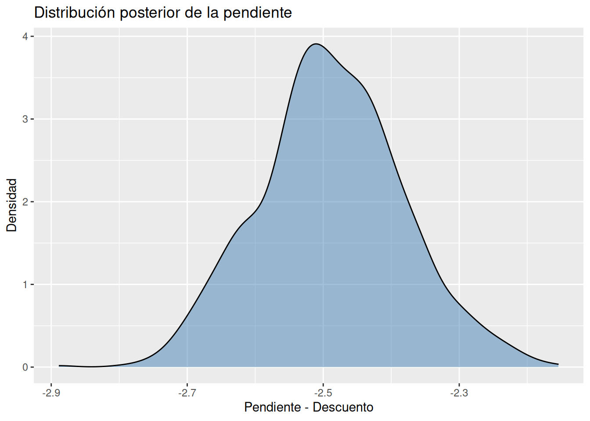
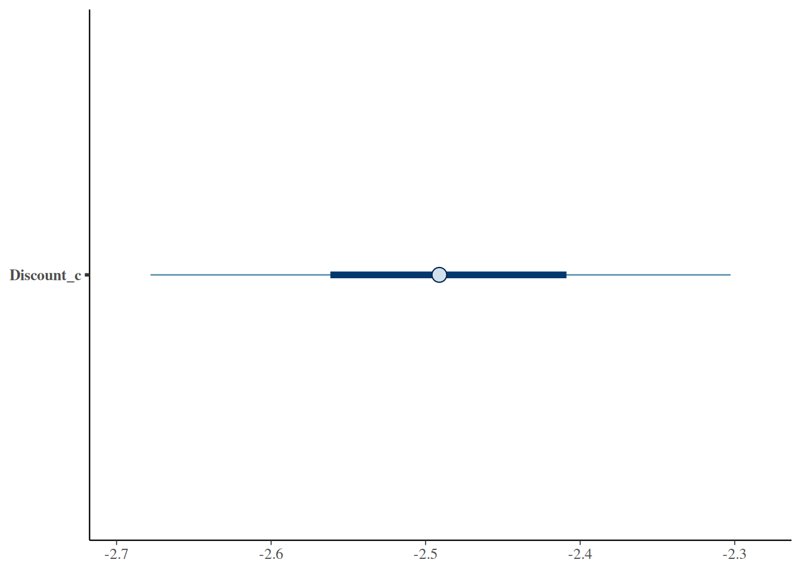
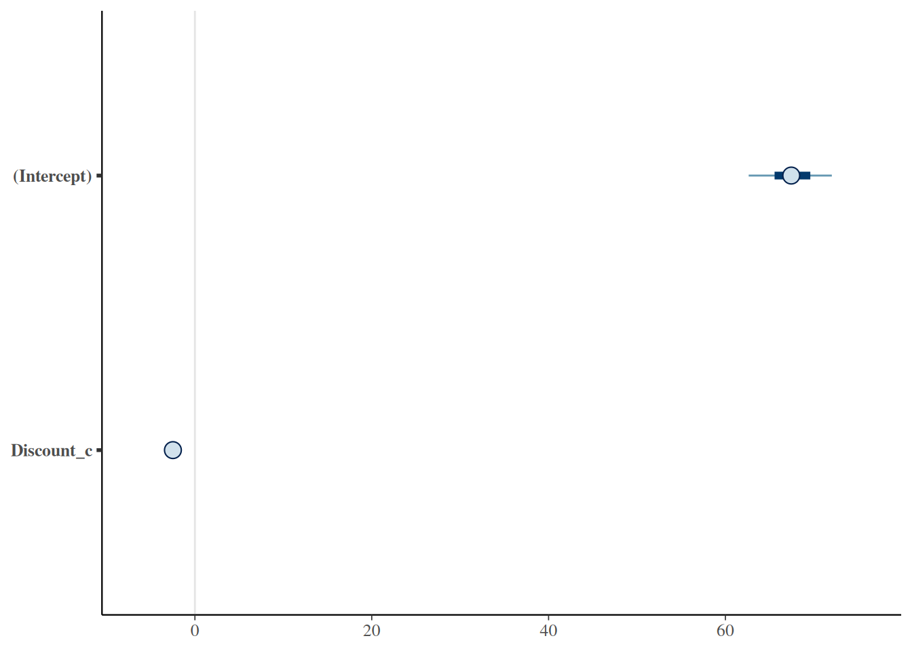
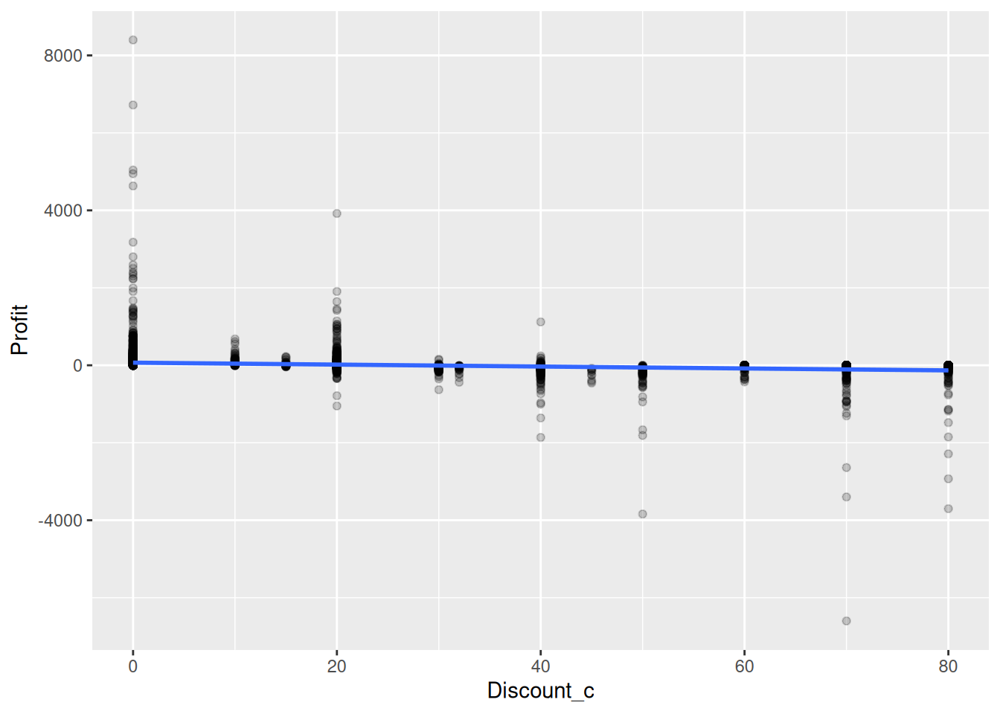
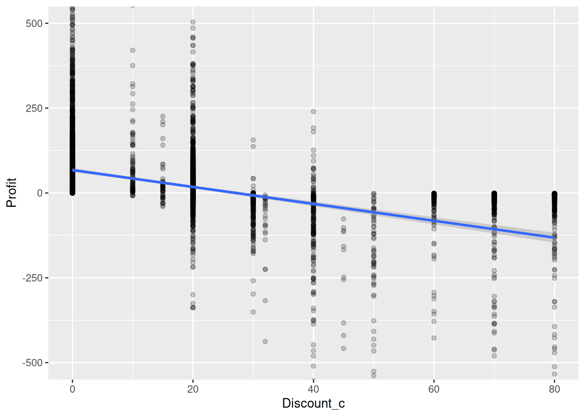

Hasta este punto del libro hemos construido simulaciones, explorado distribuciones, ajustado modelos bayesianos sencillos y aprendido a pensar en términos de incertidumbre.
Sin embargo, existe una diferencia enorme entre:
construir un modelo,
y saber interpretarlo correctamente.
De hecho, en el mundo real la mayoría de los errores analíticos no ocurren porque los modelos sean malos.
Ocurren porque las personas interpretan mal los resultados.
Muchas veces queremos que los datos nos entreguen una respuesta definitiva:
¿Funcionará la campaña?
¿Debemos ofrecer descuentos?
¿Aumentarán las ventas?
¿Es una buena decisión?
Pero los modelos probabilísticos rara vez responden con un sí o un no absoluto.
Lo que hacen es mucho más útil:
Nos ayudan a comprender qué escenarios son más plausibles que otros.
Y eso cambia profundamente nuestra forma de tomar decisiones.
La incomodidad de la incertidumbre
Las personas solemos sentirnos cómodas con respuestas definitivas.
Preferimos escuchar:
"Las ventas aumentarán."
en lugar de:
"Las ventas probablemente aumentarán, aunque existe incertidumbre."
Preferimos:
"Este tratamiento funciona."
en lugar de:
"Este tratamiento parece funcionar para muchos pacientes, pero existe variabilidad."
Preferimos:
"Este cliente abandonará la empresa."
en lugar de:
"Existe una probabilidad elevada de abandono."
Sin embargo, el mundo real rara vez ofrece certezas absolutas.
Los negocios, la medicina, la economía e incluso nuestra vida cotidiana están llenos de incertidumbre.
La pregunta no es cómo eliminarla.
La pregunta es cómo pensar mejor dentro de ella.
Recordatorio filosófico importante
En capítulos anteriores vimos una idea que ahora vuelve a aparecer:
Un modelo bayesiano no produce una única respuesta.
Produce una distribución de respuestas plausibles.
Esta idea es fundamental.
Cuando simulábamos múltiples futuros posibles, observábamos distintos escenarios.
Algunos eran más probables.
Otros menos.
Pero ninguno podía descartarse completamente.
Los modelos bayesianos funcionan de manera similar.
No producen una verdad única.
Producen una distribución de posibilidades compatibles con los datos.
¿Qué es una distribución posterior?
Imaginemos que queremos entender cómo afecta el descuento (Discount) a la ganancia (Profit).
Después de observar los datos, el modelo intenta estimar la pendiente de esa relación.
En estadística clásica solemos recibir algo parecido a:
La pendiente es -85.
Pero un modelo bayesiano responde de forma distinta:
La pendiente probablemente está cerca de -85, aunque valores entre -100 y -70 también parecen razonables.
En lugar de un único valor obtenemos una distribución completa.
Visualmente:
algunas zonas son muy plausibles,
otras menos plausibles,
algunas prácticamente incompatibles con los datos.
La distribución posterior representa precisamente eso:
Nuestra incertidumbre actual después de observar los datos.
Pensar en plausibilidad
Una forma intuitiva de interpretar una posterior es imaginar un mapa de calor.
Las zonas más oscuras representan valores más compatibles con los datos.
Las zonas más claras representan valores menos compatibles.
No estamos preguntando:
¿Cuál es el valor verdadero?
Estamos preguntando:
¿Qué valores parecen razonables dada la evidencia disponible?
Este cambio de perspectiva es una de las mayores ventajas del pensamiento bayesiano.
Un primer modelo para interpretar
Utilizaremos una regresión sencilla:
Profit = β0 + β1Discount + ϵ
donde:
Profit representa la ganancia.
Discount representa el descuento aplicado.
β₀ representa la ganancia esperada cuando no existe descuento.
β₁ representa cómo cambia la ganancia cuando aumentan los - descuentos.
Nuestro objetivo no es construir el mejor modelo posible.
Nuestro objetivo es aprender a interpretar incertidumbre.
stan_glm
family: gaussian [identity]
formula: Profit ~ Discount_c
observations: 9994
predictors: 2
------
Median MAD_SD
(Intercept) 67.4 3.0
Discount_c -2.5 0.1
Auxiliary parameter(s):
Median MAD_SD
sigma 228.5 1.7
------
* For help interpreting the printed output see ?print.stanreg
* For info on the priors used see ?prior_summary.stanreg
Observa que utilizamos una configuración ligera.
No estamos buscando máxima precisión computacional.
Estamos buscando una herramienta pedagógica para aprender a pensar probabilísticamente.
Interpretación: Es plausible según los datos del modelos que la mediana de las ganancias sea 68 dólares, cuando el descuento es cero. Sin embargo por cada punto percentual de descuento, las ganancias disminuyen 2.5 dólares. A pesar de esto todavía hay 229 dólares en ganancias que no se pueden explicar por los descuentos.
Extrayendo la distribución posterior
Ahora convertimos las simulaciones posteriores en un data frame.
Cada fila representa un mundo plausible generado por el modelo.
Cada mundo propone un valor ligeramente diferente para los parámetros.
Visualizando la incertidumbre
Podemos visualizar la distribución posterior de la pendiente.
# Visualizar la incertidumbredraws_profit %>%ggplot(aes(x = Discount_c)) +geom_density(fill ="steelblue", alpha =0.5) +labs(title ="Distribución posterior de la pendiente",x ="Pendiente - Descuento",y ="Densidad" )

Este gráfico es extremadamente importante.
No muestra un único resultado.
Muestra una familia completa de resultados plausibles.
Cómo leer este gráfico
Supongamos que la distribución se concentra alrededor de valores negativos.
La interpretación correcta sería:
*Interpretación*: El gráfico muestra que es plausible que dentro de una parte considerable de la población de estudio, cada punto porcentual de descuento disminuya las ganancias entre 2.7 y 2.3 dólares.
La interpretación incorrecta sería:
Hemos demostrado que el efecto verdadero es exactamente -83.72.
Los modelos probabilísticos rara vez justifican afirmaciones tan absolutas.
Credible Intervals
Una de las herramientas más útiles para resumir incertidumbre es el intervalo creíble.
Un intervalo creíble del 95% contiene la mayor parte de los valores plausibles según el modelo.
Por ejemplo:
# Crear los intervalos posterioresposterior_interval( modelo_profit,prob =0.95 ) # produce:
# Visualizando los intervalos plausibles de la pendiente (descuento)mcmc_intervals(as.matrix(modelo_profit),pars =c("Discount_c"))

Este gráfico permite observar:
la posición del parámetro,
la amplitud de la incertidumbre,
la variabilidad posterior.
La incertidumbre deja de ser invisible.
Ahora puede verse.
Interpretación: el punto central es la mediana posterior, la franja oscura suele representar el intervalo creíble central del 50%. Y la línea más delgada representa el intervalo creíble del 90 0 95% . Entonces lo que no es el punto central es la incertidumbre.
También podemos visualizar el intercepto de esta forma:
# Visualizar los intervalos plausibles y la mediana del intercepto# (ganancias) y la pendiente (descuento)mcmc_intervals(as.matrix(modelo_profit),pars =c("(Intercept)","Discount_c"))

Bandas plausibles en una regresión
Otra visualización muy poderosa consiste en representar la incertidumbre directamente sobre la recta de regresión.
# Representar la incertidumbre directamente sobre la recta de la # regresiónsuperstore %>%ggplot(aes(x = Discount_c, y = Profit)) +geom_point(alpha =0.2) +stat_smooth(method ="lm" )

# Representar la incertidumbre directamente sobre la recta de la # regresión con zoom en el eje Ysuperstore %>%ggplot(aes(x = Discount_c, y = Profit)) +geom_point(alpha =0.2) +stat_smooth(method ="lm" ) +coord_cartesian(ylim =c(-500, 500))

Posteriormente podemos reemplazar la línea clásica por predicciones posteriores provenientes del modelo bayesiano.
La idea central es que:
no existe una única línea.
Existen muchas líneas plausibles.
La incertidumbre del modelo
Aquí llegamos a una de las ideas más importantes de todo el libro.
Incluso si obtenemos:
miles de observaciones,
modelos sofisticados,
computadoras rápidas,
la incertidumbre nunca desaparece completamente.
¿Por qué?
Porque los modelos son simplificaciones.
Siempre existen:
variables omitidas,
factores desconocidos,
cambios futuros,
errores de medición,
fenómenos no observados.
Por ejemplo:
La ganancia de una venta probablemente depende de:
descuentos,
categoría del producto,
competencia,
temporada,
calidad del servicio,
logística.
Nuestro modelo utiliza únicamente una pequeña parte de esa realidad.
Por eso debemos interpretar cualquier resultado con humildad.
Predicciones e incertidumbre
La incertidumbre es todavía mayor cuando intentamos predecir.
Explicar el pasado suele ser más fácil que anticipar el futuro.
Por esta razón las predicciones deben presentarse como rangos plausibles y no como números exactos.
En capítulos posteriores profundizaremos en forecasting probabilístico y escenarios futuros.
¿Por qué esto mejora las decisiones?
Una empresa nunca posee información perfecta.
Aun así debe decidir.
Por ejemplo:
cuánto inventario comprar,
cuánto descuento ofrecer,
qué campaña lanzar,
qué clientes retener.
La alternativa no es:
decidir con incertidumbre,
o decidir con certeza.
La realidad es:
decidir con incertidumbre explícita,
o decidir ignorándola.
La primera opción suele producir decisiones mucho más robustas.
Reflexión bayesiana
Durante mucho tiempo la estadística fue presentada como una búsqueda de respuestas correctas.
El enfoque bayesiano propone una visión distinta.
Los modelos no son máquinas de verdad.
Son herramientas para actualizar creencias frente a nueva evidencia.
Por eso una distribución posterior no representa ignorancia.
Representa algo mucho más valioso:
una descripción honesta de lo que sabemos y de lo que todavía no sabemos.
Ejercicios
Ejercicio 1
Ajusta nuevamente el modelo:
Profit ~ Discount_c
y describe verbalmente la distribución posterior de la pendiente.
No menciones valores exactos.
Concéntrate en interpretar plausibilidad.
Ejercicio 2
Obtén un intervalo creíble del 95%.
Explica su significado utilizando lenguaje natural.
Evita terminología técnica.
Ejercicio 3
Construye un gráfico de densidad posterior para la pendiente.
Responde:
¿La incertidumbre es amplia o estrecha?
¿Qué podría explicar esa amplitud?
Ejercicio 4
Escribe tres interpretaciones incorrectas y tres interpretaciones correctas de un intervalo creíble.
Ejercicio 5
Reflexiona:
¿Por qué una empresa podría tomar mejores decisiones cuando reconoce explícitamente la incertidumbre?
Ejercicio 6
Identifica al menos tres variables que podrían influir sobre Profit pero que no aparecen en el modelo.